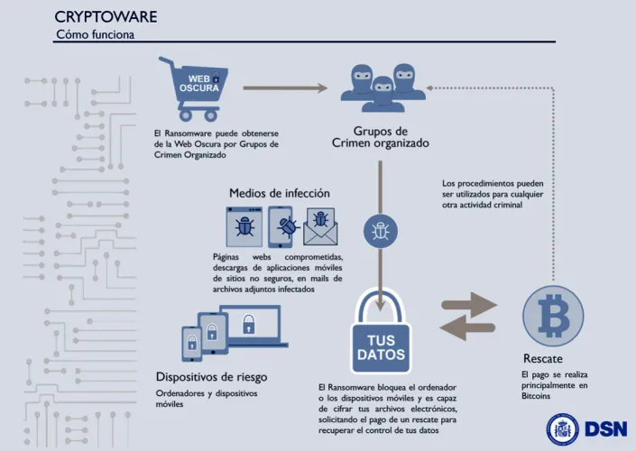
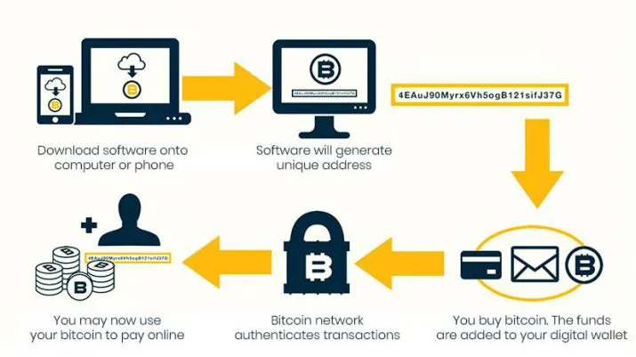
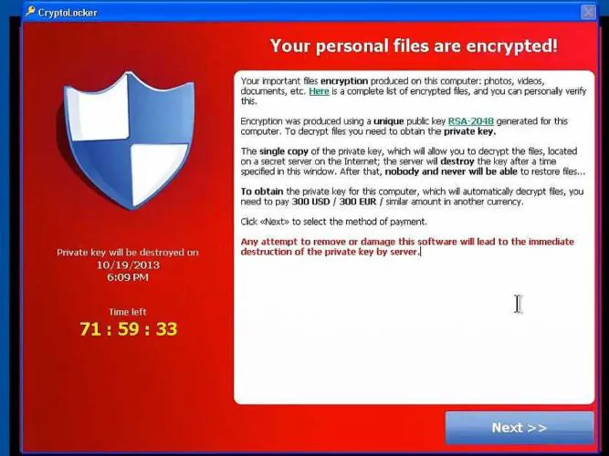
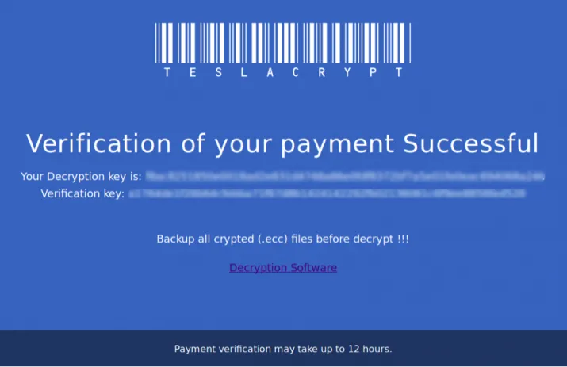
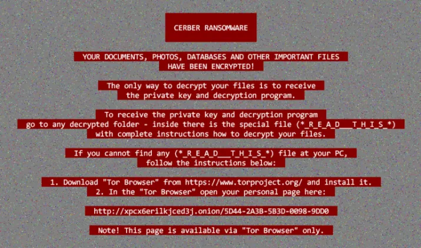
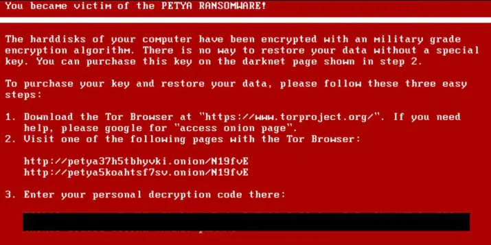
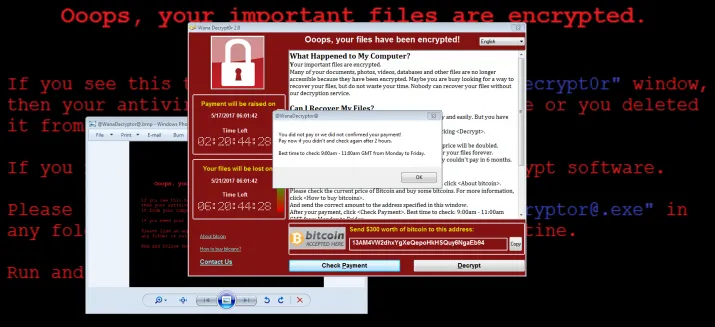

Actualmente nos pasamos el día conectados a Internet, ya sea desde el ordenador, el móvil o cualquier otro dispositivo. Esto hace que estemos expuestos a todas las amenazas que circulan por la red. Entre todos ellos se encuentran todo tipo de virus y malware, siendo uno de los más populares, puesto que su presencia ha ido creciendo notablemente en los últimos años, el ransomware. Una amenaza que sobre todo preocupa mucho a las empresas, aunque también podemos ser infectados a nivel particular. Sin embargo, puede que para muchos sea un término desconocido, por eso, vamos a mostrar a continuación todo lo que debes saber sobre este tipo de malware.
Se trata de un tipo de malware, software desarrollado con ninguna buena intención, cuyo objetivo es bloquear eluso de un ordenador o parte de la información guardada en él para que el usuario no pueda tener acceso yposteriormente, solicitar un rescate para su desbloqueo.
Su nombre viene de la unión de dos palabras inglesas, ransom que significa rescate, y ware que significa productoo mercancía. De ahí que el ransomware sea un malware que solicita un rescate a sus víctimas por recuperar lainformación o dispositivo bloqueado. Una vez que ha logrado alojarse en nuestro equipo y cifrar la información, seencargará de mostrar un mensaje a su víctima indicando del secuestro virtual de dicha información junto con lacantidad a pagar por el rescate.
Ahí se le hará saber a la víctima infectada por ransomware, que en el caso de no pagar el rescate, se procederácon la eliminación o destrucción de todos los datos secuestrados. En caso de que procedamos al pago solicitado y enel plazo correspondiente, se promete la liberación de los datos bloqueados, aunque lo cierto que en muchas ocasionesno es posible recuperarlos aunque se haga el pago.
Desde el punto de vista de los creadores de este tipo de malware, se trata de un verdadero un negocio. Sí,ilícito pero un negocio en definitiva, ya que los responsables de este tipo de malware pueden llegar a conseguircantidades de dinero muy importantes.
Los creadores de malware suelen utilizar numerosas técnicas para su distribución, siempre con el objetivo de conseguir engañar al mayor número de víctimas posibles y conseguir un mayor beneficio. Entre las técnicas más habituales para la distribución de ransomware encontramos:
Engañar a los usuarios, mediante el envío de un mensaje de correo electrónico para que instalen el malware es la más frecuente y fácil para los ciberdelincuente. Por ejemplo, el envío de un mensaje con un enlace falso o un archivo adjunto con una supuesta actualización de software hace que si hacemos clic sobre el enlace o abrimos el archivo se instale el malware en nuestro equipo.
Es frecuente también ver cómo los ciberdelincuentes utilizan ciertas técnicas a través de redes sociales o servicios de mensajería instantánea para distribuir sus creaciones. Y es que de esta manera, también pueden llegar a muchas víctimas fácilmente. En esta ocasión, también se suelen utilizar enlaces falsos o archivos que contienen macros o ficheros javascript que instalan el ransomware en los equipos de las víctimas.
Aprovechar de de ciertas vulnerabilidades de los sistemas operativos y las aplicaciones instaladas para conseguir entrar en nuestro equipo e instalar su malware es otra de las técnicas habituales. Y es que, los desarrolladores de malware disponen de determinadas herramientas que les permiten reconocer dónde están estos agujeros de seguridad. También se están aprovechando de ciertos sistemas o dispositivos conectados a internet sin las medidas correspondientes a nivel de seguridad para distribuir el ransomware.
Conseguir permisos de administrador hace que los ciberdelincuentes consigan la llave que necesitan para infectar a sus víctimas. El uso de ciertas técnicas de engaño como el propio phishing y todas sus variantes permite que los ciberdelincuentes puedas instalar su malware fácilmente.
Es una técnica que consiste en dirigir a las víctimas a sitios web infectados donde, sin que se den cuenta y aprovechando ciertas vulnerabilidades del navegador, se descarga el malware que contienen. También utilizan técnicas de malwertising, que consiste en incrustar anuncios maliciosos en sitios web legítimos que contienen código que infecta al usuario, incluso sin que este haga clic sobre el anuncio.
La mejor manera de protegerse de este tipo de amenazas es realizando una serie de tareas para su prevención. Puede que la gran mayoría de ellas resulten bastante lógicas, pero lo cierto es que la mayoría de personas que navegan por Internet a diario y no realizan todas ellas, están continuamente expuestos a ser víctimas del ransomware. Eso sí, también es verdad que el hecho de que las realicemos no nos asegura que también podamos ser infectados. Estas son algunas de las recomendaciones para tratar de evitar ser infectados por este tipo de malware:
Teniendo en cuenta que una de las técnicas más habituales para la distribución del ransomware es a través de las vulnerabilidades que puedan tener ciertos sistemas o aplicaciones, siempre es importante tener debidamente actualizado nuestro sistema operativos y todas las aplicaciones instaladas en el equipo, sobre todo el navegador web que utilicemos habitualmente.
Aunque el uso de una VPN para navegar por Internet es algo cada vez más extendido, lo cierto es que resulta algo recomendado para evitar ser víctima de este tipo de malware. Además, es importante visitar cualquier web de contenido dudoso, ya que suelen contener los conocidos como exploit, encargados de detectar las vulnerabilidades de nuestro navegador para hacer llegar el malware por ese camino. Ni que decir tiene, que tener correctamente actualizado nuestro navegador también ayudará a protegernos de estas amenazas.
Los expertos de seguridad siempre recomiendan tener un buen sistema para realizar copias de seguridad de forma periódica. De esta manera, el hecho de ser infectado por ransomware no nos supondrá más problema que el de eliminarlo, puesto que la información siempre la tendremos a salvo.
Puesto que la mayoría de malware nos llega a través del correo electrónico, es muy importante tener una correcta configuración para tratar de protegernos de este tipo de amenazas. Es importante el uso de filtros para evitar que ciertos mensajes de spam lleguen a nuestra bandeja. Se recomienda también el uso de herramientas que nos permitan realizar la autenticación de los correos entrantes, deshabilitar las macros en cualquier documento de Office que recibamos o el HTML en el propio correo electrónico, puesto que permite la incrustación de código Javascript que nos instale cualquier malware sin darnos cuenta.
Es también recomendable hacer uso de cuentas que no cuenten con privilegios administrativos o elevados, ya que en el caso de que nos las roben, estaremos facilitando que consigan un control total sobre nuestro equipo. Ni que decir tiene que el uso de contraseñas fuertes y contar con otros sistemas de seguridad adicionales como la autenticación de doble factor o activar la opción que bloquea el uso de una cuenta después de un determinado número de intentos fallidos a la hora de identificarse, nos puede ayudar a protegernos del ransomware.
El uso de un firewall nos permite establecer ciertas reglas para permitir conexiones de entrada o salida de nuestra red con el objetivo de protegernos de ciertos riesgos. En este sentido, también es aconsejable si somos usuarios de Windows desactivar el protocolo de acceso remoto si no lo estamos usando.
Si he sido infectado por ransomware, lo primero que debería hacer es desconectar el equipo de la red para evitar que se pueda extender el malware por otros equipos conectados a ella. A continuación, también es recomendable cambiar todas las contraseñas de red y de cuentas online. Eso sí, debemos hacerlo desde otro dispositivo distinto y si es posible, conectado a otra red. Una vez recuperada la información es aconsejable volver a cambiar todas estas contraseñas otra vez.
Ahora bien, si hay una premisa a la hora de ser infectado por este tipo de malware es la de no pagar nunca el rescate que se nos solicite. Dicho esto, muchos se preguntarán por qué no pagarlo si es una pequeña cantidad y esto puede solucionar rápidamente el problema. Pues bien, es importante tener en cuenta que pagar no nos garantiza que podamos tener acceso de nuevo a los datos cifrados. Además, es posible que después de hacerlo seamos víctimas de nuevos ataques puesto que ya sabrán que estás dispuesto a pagar, lo que hará que te conviertas en un blanco perfecto.
El hecho de pagar la cantidad solicitada no garantiza que el problema quede resuelto, ya que es probable que antes de devolvernos el acceso a nuestros datos, pueden solicitarnos varios pagos más. Eso por no hablar que de esta manera estaremos financiando a los ciberdelincuentes y fomentando aún más su actividad delictiva.
Es importante saber qué ransomware ha infectado nuestro equipo para poder poner solución. En este sentido, existen algunas herramientas que nos pueden ayudar a identificarlo como son IDRansomware y Crypto Sheriff. En ambos casos, estos serán los pasos básicos a seguir para utilizarlos:
Una vez identificado, podremos ponernos manos a la obra para comprobar si existe alguna herramienta que ya haya sido desarrollada para descifrar el tipo de cifrado utilizado por el malware que hemos sido infectados. Tanto si lo conseguimos con si no, también se recomienda denunciar el hecho al Grupo de delitos telemáticos de la Guardia Civil y/o la Brigada de Investigación Tecnológica de la Policía Nacional.
El bitcoin es una moneda virtual o también conocidas como criptomonedas que permiten el pago a través de Internet de forma anónima entre particulares. Dicho esto, se entiende por qué los ciberdelincuentes solicitan el pago del rescate en bitcoins.
Este anonimato que ofrecen este tipo de criptomonedas es posible gracias a los servicios de mixing o tumbling de bitcoins, accesibles desde una red anónima y que mezclan fondos de diferentes carteras para que se dificulte el rastreo de las transacciones. De esta manera los ciberdelincuentes se aseguran el cobro sin que puedan ser identificados fácilmente o que la policía pueda seguirles la pista.
CryptoLocker es un ransomware tipo troyano dirigido a ordenadores que ejecutan el sistema operativo de Microsoft.
TeslaCrypt fue el ransomware que estuvo detrás de casi la mitad de los ataques producidos con este tipo de malware en todo el mundo durante el año 2016.
Cerber surgió como servicio RaaS, es decir como una especie de programa de suscripción o afiliación entre ciberdelincuentes.
Petya es un malware de tipo ransomware que se distribuyó como troyano usando el famoso sistema de almacenamiento en la nube Dropbox, mientras que su evolución, NotPetya, lo hizo a través del envío de un mensaje de correo electrónico que llevaba adjunto un archivo de Office que se encargaba de instalar el malware en segundo plano en el equipo de las víctimas.
WannaCry es uno de los ataques más populares y recientes, ya que tuvo su gran protagonismos a mediados del año 2017.
